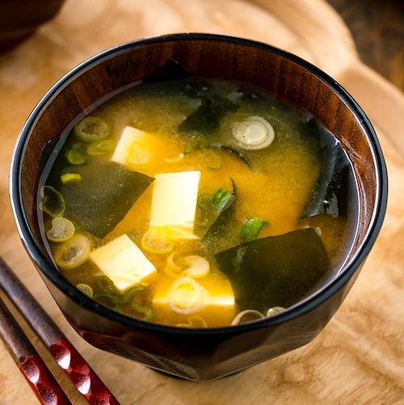

Miso Soup

Description
Most Japanese meals are served with a bowl of miso soup and steamed rice. The secret to delicious miso soup is good dashi. Experiment and try adding seasonal ingredients to miso soup!
Source for recipe
Ingredients
- 3 cups dashi
- 3 Tbsp. miso
- 6 oz silken tofu or soft tofu, drained, cut into 1/2” cubes
- 2 tsp. dried ready-to-use wakame (seaweed), rehydrated
- 1 green onion/scallion, finely sliced
Steps
- In a medium saucepan, bring dashi to a boil and turn off the heat.
- Put 1 Tbsp. of miso in a ladle and scoop some dashi from the saucepan. Blend it until it is thoroughly mixed and pour back to the saucepan. Continue this process until miso is all used. Usually for each cup of dashi, you will need about 1 Tbsp. of miso.
- Add tofu to the soup and stir gently without breaking the tofu. Return to a slight simmer until heated through. Be careful not to boil the miso soup because miso will lose flavor.
- Place the wakame and green onion in each bowl. Pour miso soup into the bowls.
Home